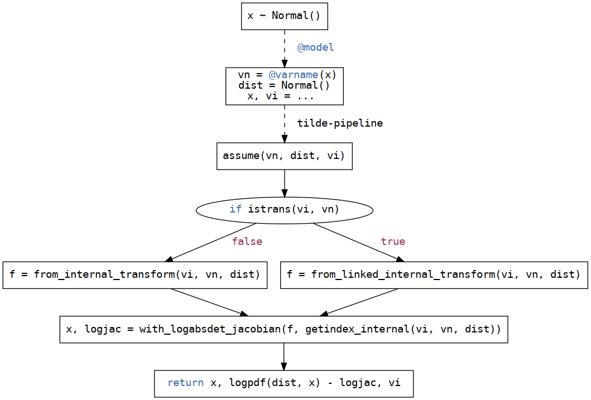
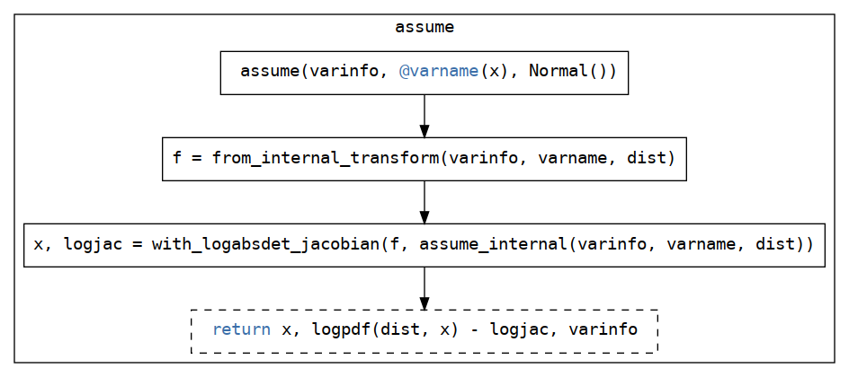
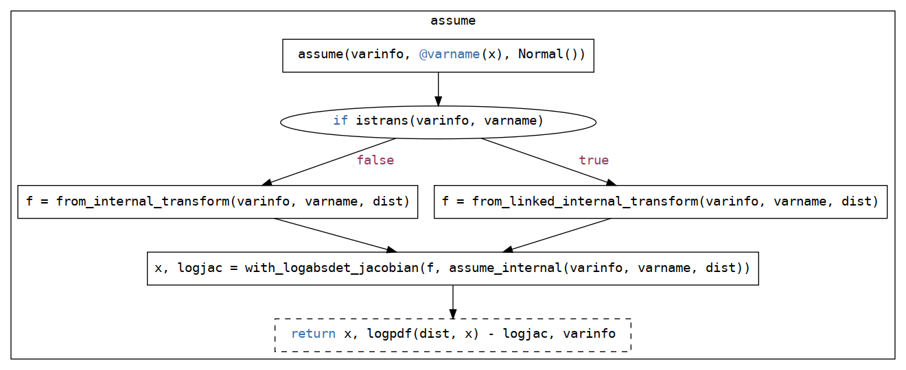
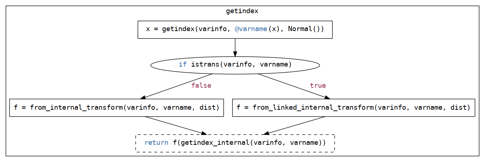
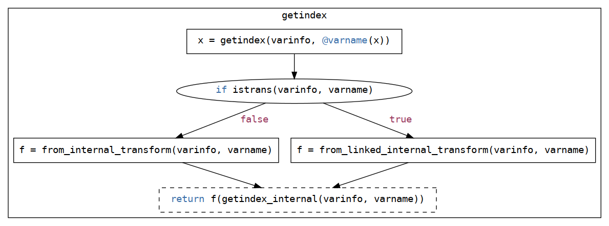

Transforming variables
Motivation
In a probabilistic programming language (PPL) such as DynamicPPL.jl, one crucial functionality for enabling a large number of inference algorithms to be implemented, in particular gradient-based ones, is the ability to work with "unconstrained" variables.
For example, consider the following model:
@model function demo()
s ~ InverseGamma(2, 3)
return m ~ Normal(0, √s)
endHere we have two variables s and m, where s is constrained to be positive, while m can be any real number.
For certain inference methods, it's necessary / much more convenient to work with an equivalent model to demo but where all the variables can take any real values (they're "unconstrained").
We write "unconstrained" with quotes because there are many ways to transform a constrained variable to an unconstrained one, and DynamicPPL can work with a much broader class of bijective transformations of variables, not just ones that go to the entire real line. But for MCMC, unconstraining is the most common transformation so we'll stick with that terminology.
For a large family of constraints encoucntered in practice, it is indeed possible to transform a (partially) contrained model to a completely unconstrained one in such a way that sampling in the unconstrained space is equivalent to sampling in the constrained space.
In DynamicPPL.jl, this is often referred to as linking (a term originating in the statistics literature) and is done using transformations from Bijectors.jl.
For example, the above model could be transformed into (the following psuedo-code; it's not working code):
@model function demo()
log_s ~ log(InverseGamma(2, 3))
s = exp(log_s)
return m ~ Normal(0, √s)
endHere log_s is an unconstrained variable, and s is a constrained variable that is a deterministic function of log_s.
But to ensure that we stay consistent with what the user expects, DynamicPPL.jl does not actually transform the model as above, but can instead makes use of transformed variables internally to achieve the same effect, when desired.
In the end, we'll end up with something that looks like this:

Below we'll see how this is done.
What do we need?
There are two aspects to transforming from the internal representation of a variable in a varinfo to the representation wanted in the model:
Different implementations of
AbstractVarInforepresent realizations of a model in different ways internally, so we need to transform from this internal representation to the desired representation in the model. For example,VarInforepresents a realization of a model as in a "flattened" / vector representation, regardless of form of the variable in the model.SimpleVarInforepresents a realization of a model exactly as in the model (unless it has been transformed; we'll get to that later).
We need the ability to transform from "constrained space" to "unconstrained space", as we saw in the previous section.
Working example
A good and non-trivial example to keep in mind throughout is the following model:
using DynamicPPL, Distributions
@model demo_lkj() = x ~ LKJCholesky(2, 1.0)demo_lkj (generic function with 2 methods)LKJCholesky is a LKJ(2, 1.0) distribution, a distribution over correlation matrices (covariance matrices but with unit diagonal), but working directly with the Cholesky factorization of the correlation matrix rather than the correlation matrix itself (this is more numerically stable and computationally efficient).
This is a particularly "annoying" case because the return-value is not a simple Real or AbstractArray{<:Real}, but rather a LineraAlgebra.Cholesky object which wraps a triangular matrix (whether it's upper- or lower-triangular depends on the instance).
As mentioned, some implementations of AbstractVarInfo, e.g. VarInfo, works with a "flattened" / vector representation of a variable, and so in this case we need two transformations:
- From the
Choleskyobject to a vector representation. - From the
Choleskyobject to an "unconstrained" / linked vector representation.
And similarly, we'll need the inverses of these transformations.
From internal representation to model representation
To go from the internal variable representation of an AbstractVarInfo to the variable representation wanted in the model, e.g. from a Vector{Float64} to Cholesky in the case of VarInfo in demo_lkj, we have the following methods:
DynamicPPL.to_internal_transform — Functionto_internal_transform(varinfo::AbstractVarInfo, vn::VarName[, dist])Return a transformation that transforms from a representation compatible with dist to the internal representation of vn with dist in varinfo.
If dist is not present, then it is assumed that varinfo knows the correct output for vn.
DynamicPPL.from_internal_transform — Functionfrom_internal_transform(varinfo::AbstractVarInfo, vn::VarName[, dist])Return a transformation that transforms from the internal representation of vn with dist in varinfo to a representation compatible with dist.
If dist is not present, then it is assumed that varinfo knows the correct output for vn.
These methods allows us to extract the internal-to-model transformation function depending on the varinfo, the variable, and the distribution of the variable:
varinfo+vndefines the internal representation of the variable.distdefines the representation expected within the model scope.
If vn is not present in varinfo, then the internal representation is fully determined by varinfo alone. This is used when we're about to add a new variable to the varinfo and need to know how to represent it internally.
Continuing from the example above, we can inspect the internal representation of x in demo_lkj with VarInfo using DynamicPPL.getindex_internal:
model = demo_lkj()
varinfo = VarInfo(model)
x_internal = DynamicPPL.getindex_internal(varinfo, @varname(x))4-element view(::Vector{Float64}, 1:4) with eltype Float64:
1.0
-0.6605501802727967
0.0
0.7507818986507172f_from_internal = DynamicPPL.from_internal_transform(
varinfo, @varname(x), LKJCholesky(2, 1.0)
)
f_from_internal(x_internal)LinearAlgebra.Cholesky{Float64, Matrix{Float64}}
L factor:
2×2 LinearAlgebra.LowerTriangular{Float64, Matrix{Float64}}:
1.0 ⋅
-0.66055 0.750782Let's confirm that this is the same as varinfo[@varname(x)]:
x_model = varinfo[@varname(x)]LinearAlgebra.Cholesky{Float64, Matrix{Float64}}
L factor:
2×2 LinearAlgebra.LowerTriangular{Float64, Matrix{Float64}}:
1.0 ⋅
-0.66055 0.750782Similarly, we can go from the model representation to the internal representation:
f_to_internal = DynamicPPL.to_internal_transform(varinfo, @varname(x), LKJCholesky(2, 1.0))
f_to_internal(x_model)4-element reshape(::LinearAlgebra.LowerTriangular{Float64, Matrix{Float64}}, 4) with eltype Float64:
1.0
-0.6605501802727967
0.0
0.7507818986507172It's also useful to see how this is done in SimpleVarInfo:
simple_varinfo = SimpleVarInfo(varinfo)
DynamicPPL.getindex_internal(simple_varinfo, @varname(x))LinearAlgebra.Cholesky{Float64, Matrix{Float64}}
L factor:
2×2 LinearAlgebra.LowerTriangular{Float64, Matrix{Float64}}:
1.0 ⋅
-0.66055 0.750782Here see that the internal representation is exactly the same as the model representation, and so we'd expect from_internal_transform to be the identity function:
DynamicPPL.from_internal_transform(simple_varinfo, @varname(x), LKJCholesky(2, 1.0))identity (generic function with 1 method)Great!
From unconstrained internal representation to model representation
In addition to going from internal representation to model representation of a variable, we also need to be able to go from the unconstrained internal representation to the model representation.
For this, we have the following methods:
DynamicPPL.to_linked_internal_transform — Functionto_linked_internal_transform(varinfo::AbstractVarInfo, vn::VarName[, dist])Return a transformation that transforms from a representation compatible with dist to the linked internal representation of vn with dist in varinfo.
If dist is not present, then it is assumed that varinfo knows the correct output for vn.
DynamicPPL.from_linked_internal_transform — Functionfrom_linked_internal_transform(varinfo::AbstractVarInfo, vn::VarName[, dist])Return a transformation that transforms from the linked internal representation of vn with dist in varinfo to a representation compatible with dist.
If dist is not present, then it is assumed that varinfo knows the correct output for vn.
These are very similar to DynamicPPL.to_internal_transform and DynamicPPL.from_internal_transform, but here the internal representation is also linked / "unconstrained".
Continuing from the example above:
f_to_linked_internal = DynamicPPL.to_linked_internal_transform(
varinfo, @varname(x), LKJCholesky(2, 1.0)
)
x_linked_internal = f_to_linked_internal(x_model)1-element Vector{Float64}:
-0.7937890653317319f_from_linked_internal = DynamicPPL.from_linked_internal_transform(
varinfo, @varname(x), LKJCholesky(2, 1.0)
)
f_from_linked_internal(x_linked_internal)LinearAlgebra.Cholesky{Float64, Matrix{Float64}}
L factor:
2×2 LinearAlgebra.LowerTriangular{Float64, Matrix{Float64}}:
1.0 ⋅
-0.66055 0.750782Here we see a significant difference between the linked representation and the non-linked representation: the linked representation is only of length 1, whereas the non-linked representation is of length 4. This is because we actually only need a single element to represent a 2x2 correlation matrix, as the diagonal elements are always 1 and it's symmetric.
We can also inspect the transforms themselves:
f_from_internalDynamicPPL.ToChol('L') ∘ DynamicPPL.FromVec{Tuple{Int64, Int64}}((2, 2))vs.
f_from_linked_internalBijectors.Inverse{Bijectors.VecCholeskyBijector}(Bijectors.VecCholeskyBijector(:L))Here we see that f_from_linked_internal is a single function taking us directly from the linked representation to the model representation, whereas f_from_internal is a composition of a few functions: one reshaping the underlying length 4 array into 2x2 matrix, and the other converting this matrix into a Cholesky, as required to be compatible with LKJCholesky(2, 1.0).
Why do we need both to_internal_transform and to_linked_internal_transform?
One might wonder why we need both to_internal_transform and to_linked_internal_transform instead of just a single to_internal_transform which returns the "standard" internal representation if the variable is not linked / "unconstrained" and the linked / "unconstrained" internal representation if it is.
That is, why can't we just do

Unfortunately, this is not possible in general. Consider for example the following model:
@model function demo_dynamic_constraint()
m ~ Normal()
x ~ truncated(Normal(); lower=m)
return (m=m, x=x)
enddemo_dynamic_constraint (generic function with 2 methods)Here the variable x has is constrained to be on the domain (m, Inf), where m is sampled according to a Normal.
model = demo_dynamic_constraint()
varinfo = VarInfo(model)
varinfo[@varname(m)], varinfo[@varname(x)](0.6978232467376038, 1.2754617862772186)We see that the realization of x is indeed greater than m, as expected.
But what if we link this varinfo so that we end up working on an "unconstrained" space, i.e. both m and x can take on any values in (-Inf, Inf):
varinfo_linked = link(varinfo, model)
varinfo_linked[@varname(m)], varinfo_linked[@varname(x)](0.6978232467376038, 1.2754617862772186)Still get the same values, as expected, since internally varinfo transforms from the linked internal representation to the model representation.
But what if we change the value of m, to, say, a bit larger than x?
# Update realization for `m` in `varinfo_linked`.
varinfo_linked[@varname(m)] = varinfo_linked[@varname(x)] + 1
varinfo_linked[@varname(m)], varinfo_linked[@varname(x)](2.2754617862772184, 1.2754617862772186)Now we see that the constraint m < x is no longer satisfied!
Hence one might expect that if we try to compute, say, the logjoint using varinfo_linked with this "invalid" realization, we'll get an error:
logjoint(model, varinfo_linked)-4.574921833997054But we don't! In fact, if we look at the actual value used within the model
first(DynamicPPL.evaluate!!(model, varinfo_linked, DefaultContext()))(m = 2.2754617862772184, x = 2.8531003258168335)we see that we indeed satisfy the constraint m < x, as desired.
One shouldn't be setting variables in a linked varinfo willy-nilly directly like this unless one knows that the value will be compatible with the constraints of the model.
The reason for this is that internally in a model evaluation, we construct the transformation from the internal to the model representation based on the current realizations in the model! That is, we take the dist in a x ~ dist expression at model evaluation time and use that to construct the transformation, thus allowing it to change between model evaluations without invalidating the transformation.
But to be able to do this, we need to know whether the variable is linked / "unconstrained" or not, since the transformation is different in the two cases. Hence we need to be able to determine this at model evaluation time. Hence the the internals end up looking something like this:
if istrans(varinfo, varname)
from_linked_internal_transform(varinfo, varname, dist)
else
from_internal_transform(varinfo, varname, dist)
endThat is, if the variable is linked / "unconstrained", we use the DynamicPPL.from_linked_internal_transform, otherwise we use DynamicPPL.from_internal_transform.
And so the earlier diagram becomes:

If the support of dist was constant, this would not be necessary since we could just determine the transformation at the time of varinfo_linked = link(varinfo, model) and define this as the from_internal_transform for all subsequent evaluations. However, since the support of dist is not constant in general, we need to be able to determine the transformation at the time of the evaluation and thus whether we should construct the transformation from the linked internal representation or the non-linked internal representation. This is annoying, but necessary.
This is also the reason why we have two definitions of getindex:
getindex(::AbstractVarInfo, ::VarName, ::Distribution): used internally in model evaluations with thedistin ax ~ distexpression.getindex(::AbstractVarInfo, ::VarName): used externally by the user to get the realization of a variable.
For getindex we have the following diagram:

While if dist is not provided, we have:

Notice that dist is not present here, but otherwise the diagrams are the same.
This does mean that the getindex(varinfo, varname) might not be the same as the getindex(varinfo, varname, dist) that occurs within a model evaluation! This can be confusing, but as outlined above, we do want to allow the dist in a x ~ dist expression to "override" whatever transformation varinfo might have.
Other functionalities
There are also some additional methods for transforming between representations that are all automatically implemented from DynamicPPL.from_internal_transform, DynamicPPL.from_linked_internal_transform and their siblings, and thus don't need to be implemented manually.
Convenience methods for constructing transformations:
DynamicPPL.from_maybe_linked_internal_transform — Functionfrom_maybe_linked_internal_transform(varinfo::AbstractVarInfo, vn::VarName[, dist])Return a transformation that transforms from the possibly linked internal representation of vn with distn in varinfo to a representation compatible with dist.
If dist is not present, then it is assumed that varinfo knows the correct output for vn.
DynamicPPL.to_maybe_linked_internal_transform — Functionto_maybe_linked_internal_transform(varinfo::AbstractVarInfo, vn::VarName[, dist])Return a transformation that transforms from a representation compatible with dist to a possibly linked internal representation of vn with dist in varinfo.
If dist is not present, then it is assumed that varinfo knows the correct output for vn.
DynamicPPL.internal_to_linked_internal_transform — Functioninternal_to_linked_internal_transform(varinfo::AbstractVarInfo, vn::VarName, dist)Return a transformation that transforms from the internal representation of vn with dist in varinfo to a linked internal representation of vn with dist in varinfo.
If dist is not present, then it is assumed that varinfo knows the correct output for vn.
DynamicPPL.linked_internal_to_internal_transform — Functionlinked_internal_to_internal_transform(varinfo::AbstractVarInfo, vn::VarName[, dist])Return a transformation that transforms from a linked internal representation of vn with dist in varinfo to the internal representation of vn with dist in varinfo.
If dist is not present, then it is assumed that varinfo knows the correct output for vn.
Convenience methods for transforming between representations without having to explicitly construct the transformation:
DynamicPPL.to_maybe_linked_internal — Functionto_maybe_linked_internal(vi::AbstractVarInfo, vn::VarName, dist, val)Return reconstructed val, possibly linked if istrans(vi, vn) is true.
DynamicPPL.from_maybe_linked_internal — Functionfrom_maybe_linked_internal(vi::AbstractVarInfo, vn::VarName, dist, val)Return reconstructed val, possibly invlinked if istrans(vi, vn) is true.
Supporting a new distribution
To support a new distribution, one needs to implement for the desired AbstractVarInfo the following methods:
At the time of writing, VarInfo is the one that is most commonly used, whose internal representation is always a Vector. In this scenario, one can just implement the following methods instead:
DynamicPPL.from_vec_transform — Methodfrom_vec_transform(dist::Distribution)Return the transformation from the vector representation of a realization from distribution dist to the original representation compatible with dist.
DynamicPPL.from_linked_vec_transform — Methodfrom_linked_vec_transform(dist::Distribution)Return the transformation from the unconstrained vector to the constrained realization of distribution dist.
By default, this is just invlink_transform(dist) ∘ from_vec_transform(dist).
See also: DynamicPPL.invlink_transform, DynamicPPL.from_vec_transform.
These are used internally by VarInfo.
Optionally, if inverse of the above is expensive to compute, one can also implement:
And similarly, there are corresponding to-methods for the from_*_vec_transform variants too
DynamicPPL.to_vec_transform — Functionto_vec_transform(x)Return the transformation from the original representation of x to the vector representation.
DynamicPPL.to_linked_vec_transform — Functionto_linked_vec_transform(dist)Return the transformation from the constrained realization of distribution dist to the unconstrained vector.
Whatever the resulting transformation is, it should be invertible, i.e. implement InverseFunctions.inverse, and have a well-defined log-abs-det Jacobian, i.e. implement ChangesOfVariables.with_logabsdet_jacobian.
TL;DR
DynamicPPL.jl has three representations of a variable: the model representation, the internal representation, and the linked internal representation.
- The model representation is the representation of the variable as it appears in the model code / is expected by the
diston the right-hand-side of the~in the model code. - The internal representation is the representation of the variable as it appears in the
varinfo, which varies between implementations ofAbstractVarInfo, e.g. aVectorinVarInfo. This can be converted to the model representation byDynamicPPL.from_internal_transform. - The linked internal representation is the representation of the variable as it appears in the
varinfoafterlinking. This can be converted to the model representation byDynamicPPL.from_linked_internal_transform.
- The model representation is the representation of the variable as it appears in the model code / is expected by the
Having separation between internal and linked internal is necessary because transformations might be constructed at the time of model evaluation, and thus we need to know whether to construct the transformation from the internal representation or the linked internal representation.